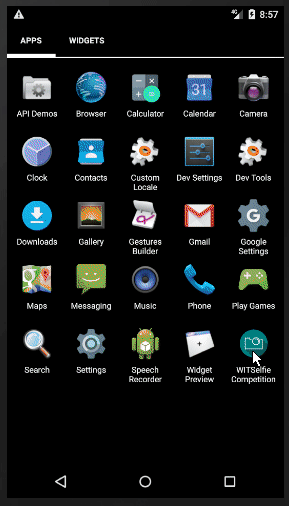
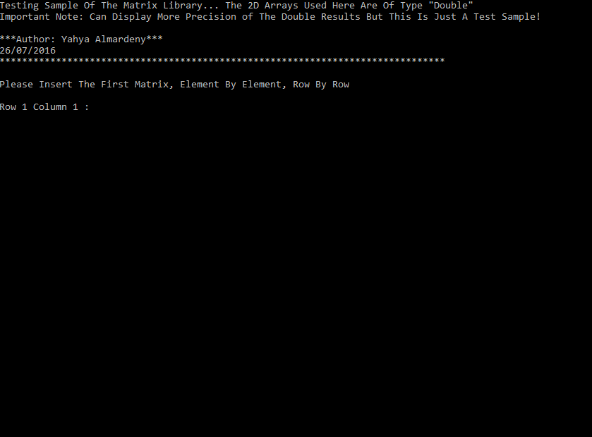
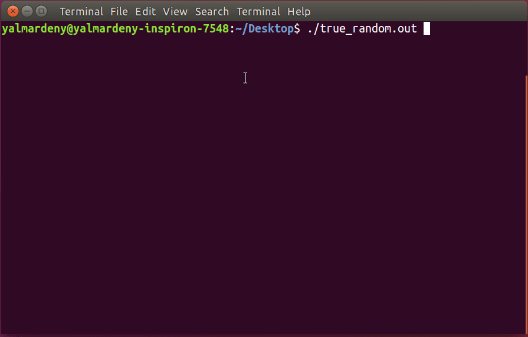

I am a software systems and machine learning engineer with good experience in an assortment of systems development and software engineering positions. Organised, pragmatic and with an in-depth knowledge of programming skills, probability and statistics and data modeling and evaluation skills, resulting in solid coding and reliable software programs.
About Me
Latest Projects
Environmental Air Pollution Monitoring System - EAPMS
A full-stack project from scratch for real-time air pollution monitoring
The project aims to build a highly scalable and low cost system that instantaneously collects and handles a real-time feedback of the weather status and reflects the content of the air and its quality. The feedback from each device is using a variety of sensors that work together in harmony based on some sophisticated algorithms.
Besides, the project aims to measure the noise level (Sound Pressure Level) in the surrounding area as well as the Particulate Matters 2.5 and 10.
All this is processed by a designated and intelligent software that runs in background, in which the sensors’ readings are sent over the cloud to a database on a host server and can be accessed and retrieved at any time.
Moreover, a real-time visualization facility is provided via an allocated website to display line-charts of the data being measured by the system.
On the other hand, the middleware responsible of sorting the data according to the places the devices are deployed in and handling the data packages in addition to the clients requests.
Tags: Python - NodeJS - ExpressJS - MySQL - Javascript - EJS - HTML5 - CSS3.

WIT Selfie Competition - Android Development
This App shall add some social value to the students’ life in Waterford Institute of Technology and make them get to know each other via having some constructive fun and good memories.
Highlights:
I developed an algorithm to set up the approximate destination size of a given image after compressing it from Bitmap to JPEG by practically calculating in reverse order the JPEG Depth used by Android. So it can encode different versions of bitmaps into 64Based Strings.
Also I developed a way to manage the memory and reduce the Selfies size in order to fit with the available free memory on the user's device as we are dealing with loads of raw bitmaps.
Tags: Android - Firebase - Algorithms - Real-time data - NoSQL.

Hilly - Improved Version of Hill Cipher
The enhancement consists of a dynamic substitution table and of an enhancement called the "extensions". In contrast to the classical Hill cipher the key matrix should be just "invertible" but not invertible modulo 26.
Hilly's Concept & Algorithm is published on MysteryTwisterC3.
Tags: Hilly - Cipher - C - Encryption - Decryption - Hill Cipher.
Spanish Strip Cipher - SSC
This application implements the Homophonic-Substitution-Cipher SSC, in which a plaintext letter not only maps to one cipher text character but it can map to different ones. During the Spanish civil war (1936-1939) this algorithm was widely adopted by both sides, Republicans and Nationalists.
Available in 4 languages: English - German - French - Spanish.
Tags: Java - Swing - AWT - Data Structure - SSC - Encryption - Decryption.

Towers Of Hanoi Game
Towers of Hanoi Game in two versions: Classic and Alternative.
In the alternative version, every some certain moves, the player gets a special/magic brick that can break the rules of the game (the algorithm).
The game can be played in different ways: Clicking on the tower, the button beneath each tower or by drag-and-drop.
Tags: JavaFX - Java - Algorithms - GUI - Game Development .

JORY - Preschool Learning Program
JORY is an intuitive, interactive & flexible preschool learning program for both native and non-native English children.
It provides visual & auditory learning materials for 7 different subjects.
One of the most important features of this program is that it allows the users (parent) to add new elements to every subject, delete elements and modify existing elements.
Tags: Swing - Java - Data Structure - Interactive Learning.

C Library For Matrices
This is a very useful library written in C for handling and doing the most important calculations on matrices.
This library provides functions that can do the following calculations:
Addition - Subtraction - Multiplication - Division - Determinant (up to 11x11 matrix size) - Inverse Matrix (up to 11x11 matrix size) - Transpose.
Tags: C Language - Matrix Library - Matrix Calculations - Matrix Functions.

Map Cutter
This tool shall help in cutting a given image (map) into visual regions by creating SVGPath representatives. Then a Class Regions will be created at the end of the session containing all the regions and their attributes. In addition to some useful static methods to manipulate those regions.
This class will create variables with specific values to control the Position Translation (X & Y) of the regions, so they become fully resizable, thus comply with the Size Changes of the Scene.
Tags: JavaFX - Java - Developer Tool - GUI Design.

True Random Number
A new approach -that can be a gist for a research paper- to create a true random number depending on the unpredicted behavior of the CPU by running a competition between two threads that have the same priority and letting the CPU manage this competition.
Tags: C Programming - Linux - True Random Number - Multi-threading.
Recording One Event In Stage - Windows Platform
GUI Listeners to the changes in the Stage in JavaFX observe and record every single tiny change in the Stage Size which will consume a huge amount of resources in case the developer concerns about recording the changes in the Stage only after each "complete" change in size.
This is a smart and advanced workaround to customize a given Stage to record the changes of its size ONLY when user starts and finishes resizing (recording one event of complete change).
Tags: Event-Driven Programming - JavaFX - Java - Developer Tool - GUI Design.

Exam Papers Comparison - Enjoy!
This intelligent application tool shall save the student time in looking for the repeated questions among a bunch of past exam papers.
It makes a smart parsing to the questions among the exam papers and return the similar ones according to the flexibility specified by the user (between 1 - 100).
Tags: Algorithm - AI - JavaFX - Java - Students Tool.

Game Of Thrones - Westeros Interactive Map
A complete application that implements an interactive map of Westeros.
The application comes with initial database containing information about the most popular families/houses in the series.
You can add new houses, edit existing houses and navigate already-setup houses.
All new members and updates will be stored in an allocated database automatically.
In addition, there is a slide-show for summarized and quick navigation.
Tags: JavaFX - Java - MySQL - GUI - Interactive Maps .
Other Projects
Community Blood Bank
This project provides an administration facility and tool for managing the patients'(donors) data and records in the Community Blood Bank (virtual company).
This project focuses on the backend development via using PHP as server-side programming language.
To access the admin site, go to admin directory (Username: root | Password: root).
Binary Representation in RAM of Decimal Numbers
This program show you how a given decimal number is represented in the RAM in binary in both 32-bit and 64-bit system architectures.
This program comes in two versions 1.0 and 2.0
Windows Customized Console-Menu For Developers
This is a C Library to make console menu for Windows platform. It provides a customizable method for both Horizontal-Menu and Vertical-Menu. Plenty of options and colors can be chosen.
Work Experience
Software Systems & Machine Learning Engineer - TSSG (Jul. 2018 - Present)
I am working in the Mobile Ecosystem and Pervasive Sensing Unit - MEPS as a Software Systems & Machine Learning Developer.
Currently working on AI project called CDaas that is a cloud-based infection disease detection system and I lead the development of the Machine
Learning System.
My main focus is on:
- Data Ingestion & Storage.
- Data Exploration/Transformation Layer.
- Machine Learning Models Design.
- Algorithms & Implementation.
- Microservices Integration
IoT Software Systems Engineer - TSSG (Jul. 2017 - Jan. 2018)
I worked in the Telecommunications Software & Systems Group for 6 months at the Programmable and Autonomous Systems Unit (PAS).
My duties included the complete SDLC (System Development Life Cycle):
- Planning and Requirements Analysis.
- Designing Overall Architecture of the System.
- Building, Programming and Developing the System (backend, frontend and hardware connectivity).
- Testing and Maintaining the Quality of the System.